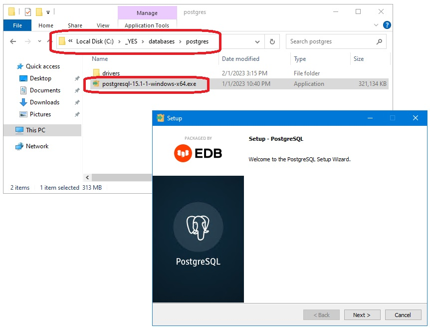

Ponos Quick Start Guide: Download and Install PostgreSQL
Run the PostgreSQL installer
The PostgreSQL installer is included in the _YES install.
Navigate to C:\_YES\databases\postgres and run the installer there.
Accept all of the defaults EXCEPT:
-
UNCHECK THE "Stack Builder" OPTION.
-
Use "ohdsi" as the password if you want everything to run out of the box.
You can choose another password but you will then need to modify the configuration files
(0/5, would not recommend).
